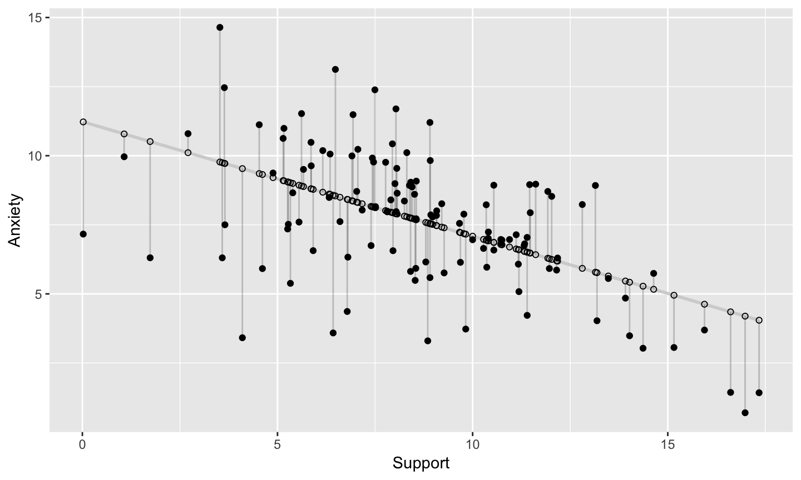
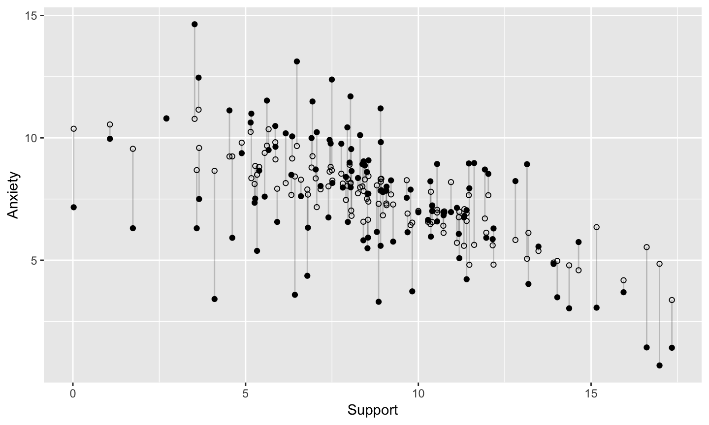
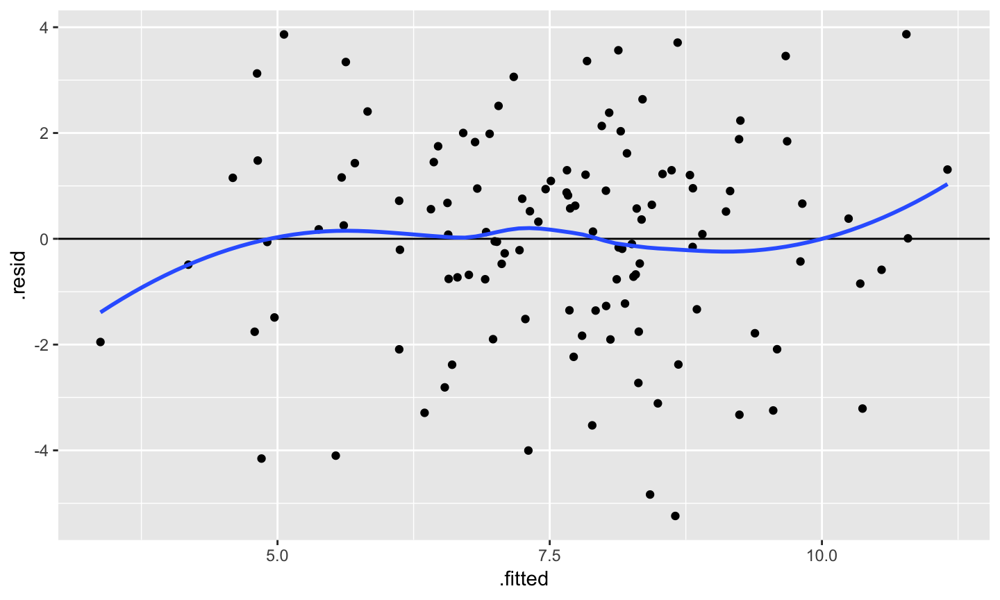
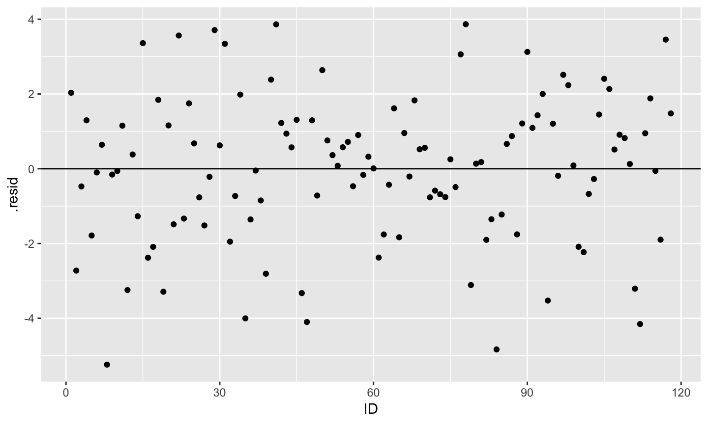
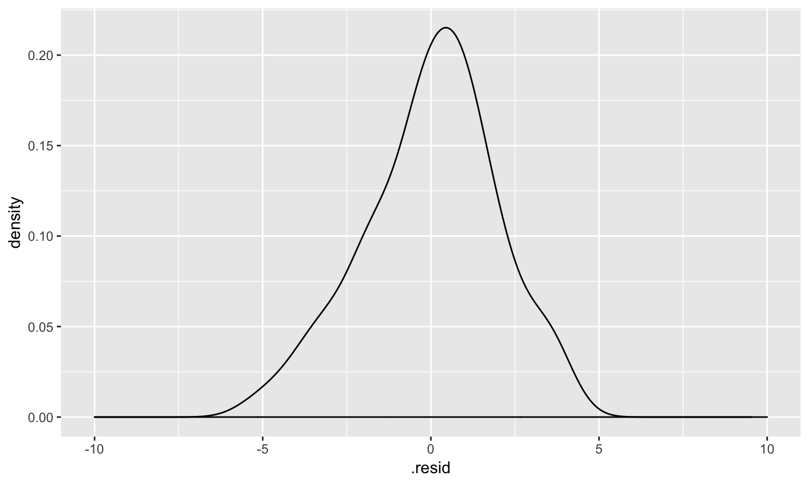
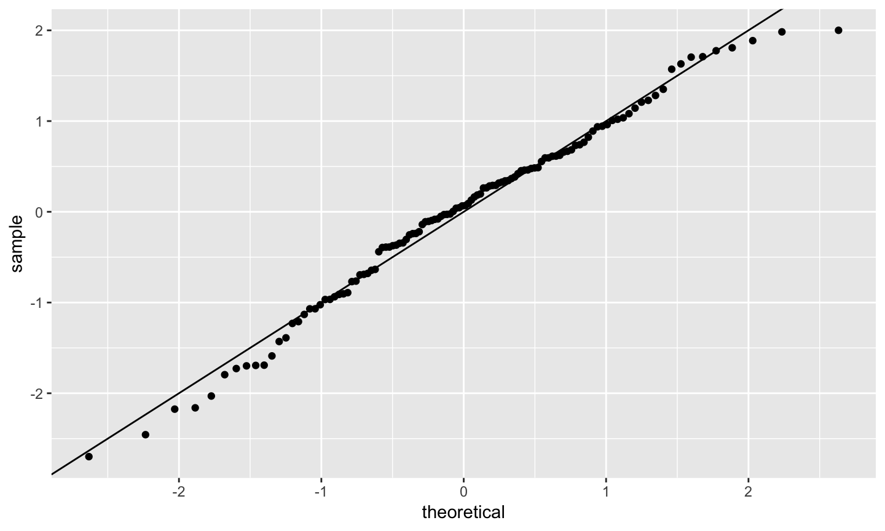
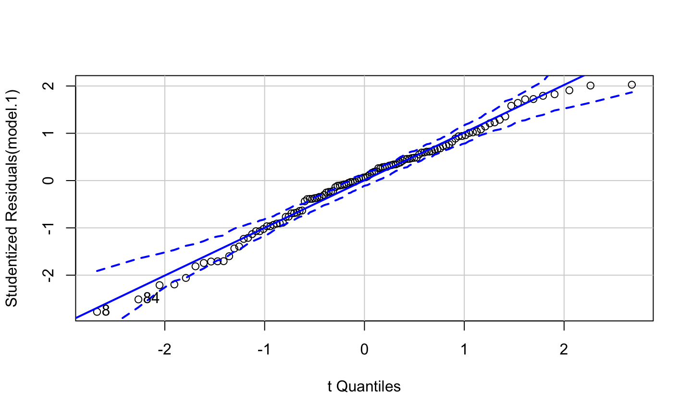
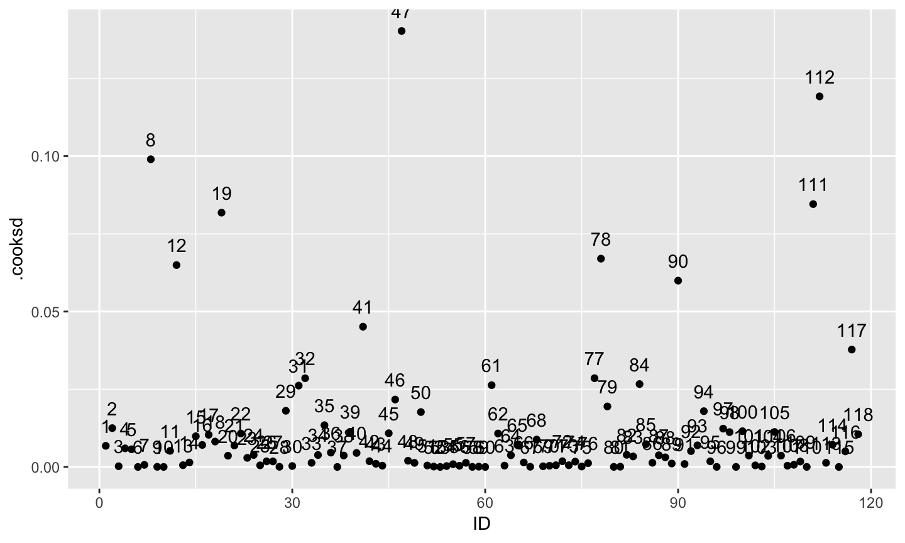
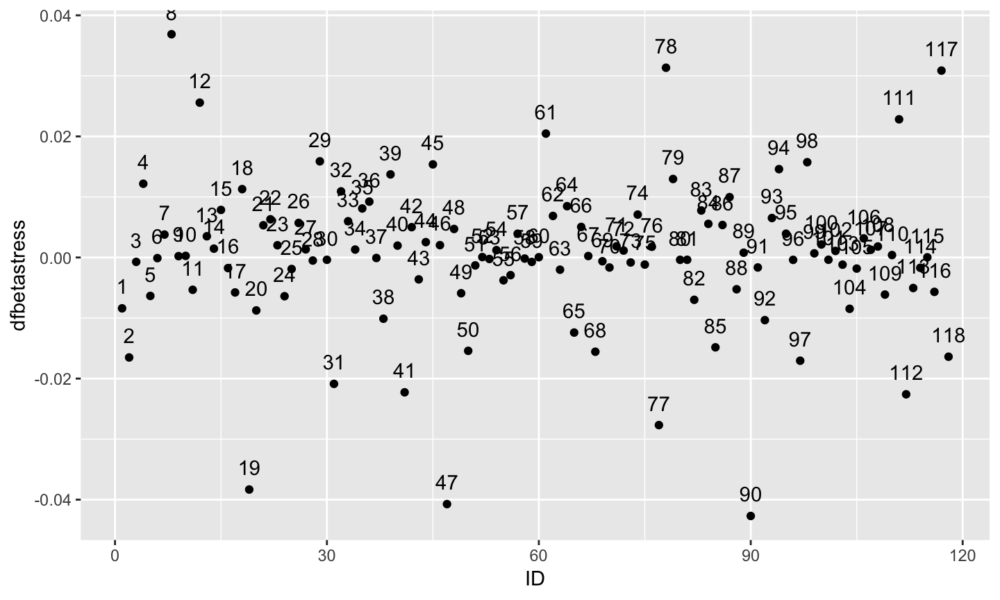

- Best linear unbiased estimate of beta
Properties: Unbiased, Efficient (se minimum), Consistent (N decreases se)
| Violated Regression Assumption | Coefficients | Standard Errors |
|---|---|---|
| 1. Measured without error | Biased | Biased |
| 2. Correctly specified form | Biased | Biased |
| 3. Correctly specified model | Biased | Biased |
| 4. Homoscedasticity | Biased | |
| 5. Independent Errors | Biased | |
| 6. Normality of the Errors | Biased |
| Assumption | detect |
|---|---|
| 1. Measured without error | Reliability |
| 2. Correctly specified form | Residuals against predicted |
| 3. Correctly specified model | Theory, endogeneity test |
| 4. Homoscedasticity | Residuals against predicted |
| 5. Independent Errors | Design |
| 6. Normality of the Errors | q-q plot or distribution |
load data
library(readr)
a_data <- read.csv("diagnostics.csv")
library(broom)
model.1 <- lm(Anxiety ~ Stress + Support, a_data)
a_data<- augment(model.1)
a_data
## # A tibble: 118 x 10 ## Anxiety Stress Support .fitted .se.fit .resid .hat .sigma .cooksd ## * <dbl> <dbl> <dbl> <dbl> <dbl> <dbl> <dbl> <dbl> <dbl> ## 1 10.2 3.20 6.16 8.15 0.270 2.03 0.0186 1.98 6.80e-3 ## 2 5.59 7.01 8.91 8.31 0.273 -2.73 0.0191 1.97 1.25e-2 ## 3 6.58 6.17 10.5 7.06 0.215 -0.474 0.0118 1.99 2.30e-4 ## 4 8.95 8.70 11.5 7.66 0.390 1.30 0.0388 1.99 5.99e-3 ## 5 7.60 5.27 5.55 9.38 0.281 -1.79 0.0201 1.98 5.68e-3 ## 6 8.16 5.12 7.51 8.25 0.198 -0.0983 0.00998 1.99 8.36e-6 ## 7 9.08 6.85 8.56 8.44 0.269 0.642 0.0185 1.99 6.72e-4 ## 8 3.41 1.77 4.1 8.65 0.392 -5.24 0.0392 1.93 9.90e-2 ## 9 8.66 3.75 5.39 8.81 0.265 -0.154 0.0180 1.99 3.77e-5 ## 10 4.85 5.45 13.9 4.91 0.373 -0.0597 0.0354 1.99 1.15e-5 ## # ... with 108 more rows, and 1 more variable: .std.resid <dbl>


## `geom_smooth()` using method = 'loess' and formula 'y ~ x'
## `geom_smooth()` using method = 'loess' and formula 'y ~ x'




library(car) qqPlot(model.1)

## [1] 8 84
#base plot function too #plot(model.1, which = 2)
| Assumption | Fix |
|---|---|
| 1. Measured without error | Factor scores, SEM, more data |
| 2. Correctly specified form | Different model |
| 3. Correctly specified model | ¯\_(ツ)_/¯ |
| 4. Homoscedasticity | Bootstraps, WLS,transformations |
| 5. Independent Errors | Use differ method |
| 6. Normality of the Errors | Additional IVs, differnt form |
Distance From Prediction- how far is observed value from predicted value (i.e. residuals)
deleted residuals takes into consideration what would happen if case were deleted

